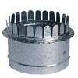
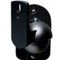
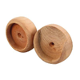
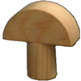

<!DOCTYPE html>
<html>

<head>
  <title>My experiment</title>
  <script src="https://unpkg.com/jspsych@8.0.0"></script>
  <script src="https://unpkg.com/@jspsych/plugin-html-keyboard-response@2.0.0"></script>
  <script src="https://unpkg.com/@jspsych/plugin-html-button-response@2.0.0"></script>
  <script src="https://unpkg.com/@jspsych/plugin-audio-button-response@2.0.0"></script>
  <link href="https://unpkg.com/jspsych@8.0.0/css/jspsych.css" rel="stylesheet" type="text/css" />
</head>

<body></body>
<script>

  /* initialize jsPsych */
  var jsPsych = initJsPsych();

  /* create timeline */
  var timeline = [];

  /* define welcome message trial */
  var welcome = {
    type: jsPsychHtmlKeyboardResponse,
    stimulus: "Welcome to the experiment. Press any key to begin."
  };
  timeline.push(welcome);

  //basic image choice array
  image_choices = [
    '',
    '',
    '',
    ''
  ];

  // Word prompted with text
  var text_trial = {
    type: jsPsychHtmlButtonResponse,
    stimulus: '<p>toma</p>',
    choices: image_choices,
    prompt: "<p>Click on the correct object</p>"
  };

  // Word prompted with audio
  var audio_trial = {
    type: jsPsychAudioButtonResponse,
    stimulus: 'audio/1.wav',
    choices: image_choices,
    prompt: "<p>Click on the correct object</p>"
  };


  // MORE ADVANCED
  // create a procedure for learning trials
  // present two images
  // two audio files are played in turn
  // then prompt the participant to click continue

  //Two words prompted with audio
  var trial_1_images = `
  
  
  `
  var multiple_audio_trial_procedure = {
    timeline: [
      //play word 1
      {
        type: jsPsychAudioButtonResponse,
        prompt: jsPsych.timelineVariable('images'),
        choices: ["Continue"],
        response_allowed_while_playing: false,
        trial_ends_after_audio: true,
        stimulus: jsPsych.timelineVariable('audio_1')
      },
      //play word 2 and prompt participant to advance
      {
        type: jsPsychAudioButtonResponse,
        prompt: jsPsych.timelineVariable('images'),
        choices: ["Continue"],
        response_allowed_while_playing: false,
        trial_ends_after_audio: false,
        stimulus: jsPsych.timelineVariable('audio_2')
      },
    ],
    timeline_variables: [{audio_1: 'audio/1.wav', audio_2: 'audio/2.wav',images: trial_1_images}]
  }


  timeline.push(text_trial, audio_trial, multiple_audio_trial_procedure);


  /* start the experiment */
  jsPsych.run(timeline);

</script>

</html>